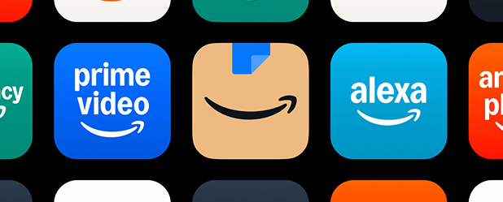
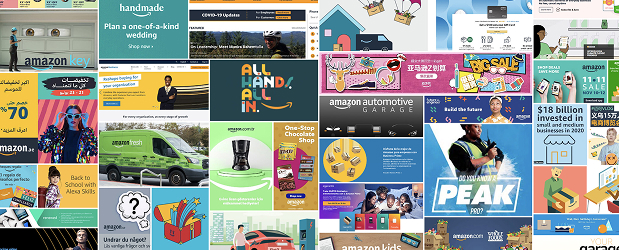
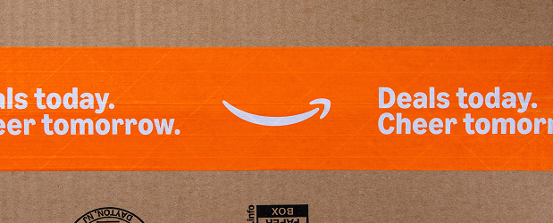
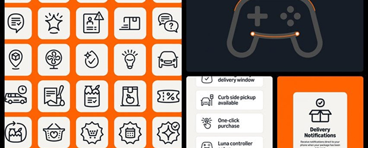
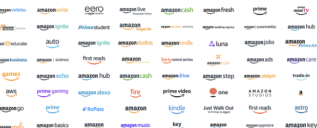

O sutil rebranding da Amazon: Transformação estratégica da comunicação visual
Em 2025, a Amazon, uma das maiores empresas do mundo, revelou uma transformação visual que, embora sutil à primeira vista, representa uma das mais abrangentes e estratégicas reformulações de marca dos últimos anos. Este projeto ambicioso, fruto de uma colaboração de 18 meses entre o estúdio de design Koto e a equipe interna de marca da Amazon, a Amazon XCM, redefine como a gigante do comércio eletrônico se comunica visualmente com o mundo.

O que torna este rebranding particularmente notável não é uma mudança radical de identidade, mas sim a forma meticulosa como elementos icônicos foram refinados e um sistema visual coeso foi implementado em uma escala impressionante: mais de 50 sub-marcas em 15 mercados globais. Como descrito pelo próprio estúdio Koto, este foi um projeto de “transformação global de marca” que buscou resolver um desafio fundamental: à medida que a Amazon crescia em velocidade extraordinária, seu sistema de marca frequentemente lutava para entregar excelência criativa consistente, fragmentando-se entre equipes, regiões e experiências.
Unificando um império visual fragmentado

Para compreender a magnitude deste projeto, é essencial entender o contexto. A Amazon não é apenas uma loja online – é um ecossistema vasto que abrange desde comércio eletrônico e entretenimento até tecnologia de ponta e serviços em nuvem. Com esse crescimento exponencial, a identidade visual da empresa havia se tornado cada vez mais fragmentada, com diferentes divisões e produtos desenvolvendo suas próprias interpretações da marca.
Como explicado pela equipe da Koto, “juntos com a equipe interna de marca da Amazon, a Amazon XCM, construímos um novo sistema de marca que eleva os ativos mais icônicos da Amazon”. Este não era apenas um exercício estético, mas uma necessidade estratégica para uma empresa cujo alcance global e diversidade de ofertas exigiam uma linguagem visual mais coesa e flexível.
Refinando um Ícone Global

No centro deste rebranding está a evolução do elemento mais reconhecível da Amazon: o sorriso que vai do “a” ao “z” no logotipo. A agência de design Koto, em colaboração com a equipe Amazon XCM, criou o que eles descrevem como “um sorriso mais empático” – a primeira atualização significativa do logotipo em mais de 20 anos, desde a fundação da empresa em 1994.
Esta nova versão do sorriso mantém a essência do original, mas com um refinamento sutil que transmite mais calor e acessibilidade. Como destacado pela Dezeen, o exercício de rebranding focou em organizar os ativos de marca “fragmentados” para criar uma identidade mais coesa, mantendo ao mesmo tempo o reconhecimento instantâneo que o logotipo da Amazon conquistou globalmente.
A transformação do sorriso é um exemplo perfeito de como pequenas mudanças podem ter um impacto significativo. O novo traço é mais suave, mais orgânico e, como o nome sugere, mais empático – refletindo uma evolução na personalidade da marca que busca estabelecer uma conexão mais humana com seus clientes.
Um Sistema Visual Integrado

Enquanto o refinamento do sorriso icônico captura a atenção imediata, o verdadeiro poder deste rebranding está no abrangente sistema visual que agora unifica toda a comunicação da Amazon.
A Transformação Silenciosa que Redefine uma Gigante

O rebranding da Amazon, conduzido pelo estúdio Koto em colaboração com a equipe Amazon XCM, representa um caso exemplar de como uma das maiores empresas do mundo aborda a evolução de sua identidade visual. Em vez de mudanças radicais que arriscam alienar o reconhecimento de marca construído ao longo de décadas, a Amazon optou por uma transformação mais sutil mas profundamente abrangente – refinando cuidadosamente seus ativos visuais mais icônicos enquanto constrói um sistema coeso que unifica seu vasto ecossistema de marcas.
Esta abordagem reflete uma compreensão sofisticada do papel da identidade visual na estratégia corporativa moderna. Não se trata apenas de criar um logo atraente ou seguir tendências de design – trata-se de construir um sistema visual que estruture e fortaleça toda a comunicação da marca, criando experiências mais coerentes e memoráveis para os usuários.
Como observou a equipe da Koto, este projeto foi “18 meses, 15 mercados globais e mais de 50 sub-marcas” em desenvolvimento. O resultado é uma transformação que, embora sutil à primeira vista, representa uma reformulação fundamental de como uma das marcas mais reconhecíveis do mundo se apresenta ao mundo.
Em uma era de mudanças constantes e atenção fragmentada, há algo profundamente impressionante na capacidade da Amazon de implementar uma transformação tão abrangente com tanta sutileza e propósito. É um lembrete de que, às vezes, as mudanças mais poderosas são aquelas que você mal percebe acontecendo – até que, de repente, você não consegue imaginar o mundo de outra forma.